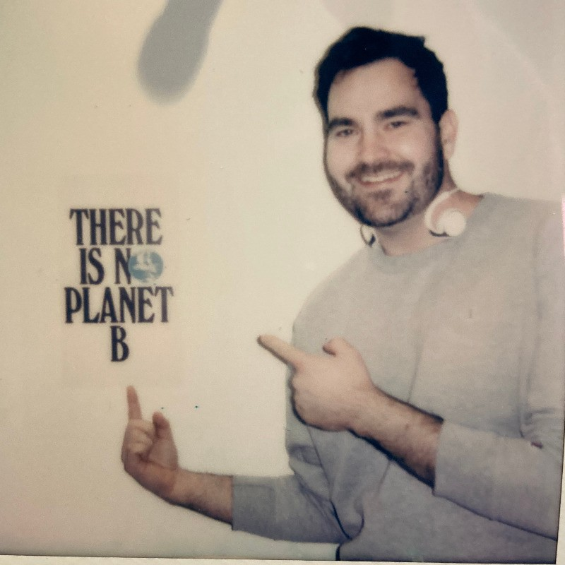
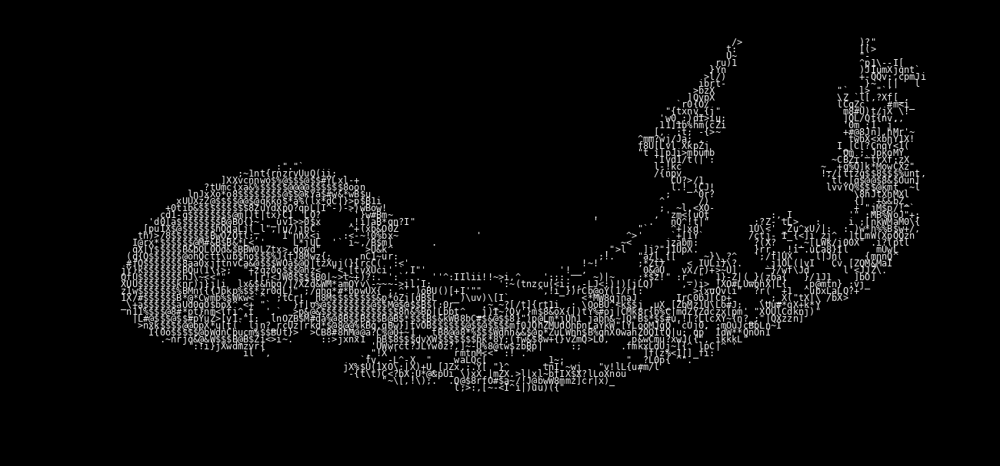

. .,,...,,,,,,..,,,.. .
....,,,..,,,,,,,,,:,.,,,::,,,,,,,,,,,,,,.,,,,,..... ..
.,..,,, ..:,,.,,::, ,,..::,:,,,,,,::,::,,:::::::.,,::,:::,::,,:,,.
.,. . ...,.:,.,,,,,:,..,,,,,:;;i;;:;;;i;iii;;;;:;;i;;i;i;ii:::;:::;:,,::,::,,
,::.,,.,:.. ... , .,.,.:.,,.,:,,;:;iii;iii:;;i::;;;::;;;;;:,:;;:i:iiii:,::,:,:::,::::::::
:,:...::. . ,,,: .,. .,.,..,,:, ..:.:,:;;;ii;;,;;:,:::,,::... ...,:;i;;;;;;;,;,:,:::,:,.;:::::,:
,,,.:,:,,. . ..,,:,,,. ,. .,,....:,, ::,:i:;;i;;::::::,... .,:::;;i:;i;;i.::::::,:::,:,,,::,:
,,,...,,,.. ,,.,:.,,,,... ,:, ,.,.: ,;;;;:;i;i:::::::... ::;;:iii1;;ii;i;:::::,,,,,,,,:,,,::
:,...,:,... ,::.,,,,:,,,:,,. .,..:.,: :;;;i::;;;:;;:: .:;::;;;,ii;i;i;;i:.;;:::::,,:.,.,,::
,,:.,:.. . :;i;;:,,.,,.,,,.,. ,: ,,:, ,:;;;;i:ii;:::,. .;i;::;i;iii;iii;;ii;i:;;:::,,,,,,,::,
....,.,:... . .:;;iii;,:::..,:,,,,, .,..:.:, .:;;:ii,;,:;:;, ,;1i;:::::iii:1i;;i;,:i:;;,,::::,,,,,,,
,,,.,:,:. :.,;;i:;i;;:,,,...,,,.. ., . ::. ,;;;;i:;;;:::. .:;1;;::;i;:i;::ii;i;i;:;:::;;:::::,,,::
:,..,,.;... ,,:,;;:;::;,.:.,,,,, ,,.. : ..:;:i;:;;;::;: :i;i;iii::::;i;;:i:;;iii;:;::;:.:,,.,,,:
,...:,. .. ,,,;:;;,:.,,,.:., ..,. .:..,::::i;;:,::. ;;;i1;;:;:,:,::iiii;;;:;;i;;i:;:::,,,:,,
.,,,,,,,. .,...,:,:..,. ,:. .:.,.:;,;i;;;,;:,, ;;;;ii;;ii:;;,,;;:;;;:;;:;;:::;:::,::,,:
,.,... ..,. ., ,.,,,:,..,::;i;i;::;,. ;;;:i;iii;i;;,:,::;:;,;;;::;:,,,,,,..,:
... . .. .,,: ,,,,.::;:iii;;:., :i;;:ii;i;iii,;:::,::.,,,:,,,,.:,..,:,,
... .,.: ,,:.:,,:::iii:;:,,. .:ii;,i;:,iii:;;i:;:,.,..,.,,.....
. ,,,.,.,,::::i;ii;,::,., .::;ii::,;;::;i;::::,;:,,:,:....
..,,..:,,.:,,i;i:ii::::,...,:;;i:,,,,,,:::,::.,,,,,.,,.,,.
.,.,,,,:,.,,,:;;:i;i;:::,,,:;::;,,, ...,,........... ,
, . ,,,:,:.:.:,;:;;iii;ii;:;,,,:, .,,... .
, ..,,,,,,,,,,,;::;:i;;1;i;;;:::;: ..,
.,.,:,,,::::::::;:i:iiii;:,;;::,., ,..
. .,::,:,,,:,.:,:::,::::;;:;;,,,,,,::,,
::. .. ,. ,,,,,:,:,.,.,,:,.;::,;;;:ii;;
;ii;i;;;:,,.. ..,,, ,,:,,,::,,,,.,:::
:;;,:;;:,:;,,::,... ... ...,:,,:.::
,,,.,,,:,,.....,.,:,,,,.
.. .,,,,,,..,,, ....

A Windows desktop app that automates secretarial tasks for a public defender's office.
A MLS for the automotive sector, built by scraping Craigslist at web scale without DDOSing it.
I taught at Central Washington University for 3 years, and was really great at it.
I worked as a USPTO Patent Examiner in Art Unit 2121, Artificial Intelligence.
My philosophy on teaching and mentorship, submitted during my academic job search.
Undergraduate transcript documenting core electrical and computer engineering coursework.
Graduate transcript covering topics including machine learning, databases, and networks.
A concise, printable overview of my skills, work history, and academic background.
Professional and academic references available on request, or via this document.
An interactive implementation of the XKCD Comic.
A scripted dev-loop for writing selenium webdriver scripts; Automating Automation.
Yes, 'wildfire szn' is a new thing
Youtube GithubIn Eastern WA, among other parts of the world, a pattern of seasonal fires emerged around 2013. These fires are large enough to significantly impact the air quality of the region, which is in turn measured and tracked by various government organizations.
I wanted to prove to myself that it's actually a new thing, and not just a rose-colored memory of the past, so I contacted the WA State Dept. of Ecology for their air quality data, which they provided as a csv of daily values for each county in WA dating back to 1970. I used geopandas to make a script that would graph the data for each day following their heatmap convention, and then collected each graph into a video.
Some more googling can find papers that use sedimentary carbon to conclude that similar wildfire patterns emerged in the area during the 14th and 17th centuries. It could be interesting to do a statistical analysis of how the yearly average air quality has changed over time, but at this point I think most of the serious people agree on the causes and effects of climate change.
You can just strap a battery to a bike
Instagram Exploratorium WikipediaSince the industrial revolution, human activities have raised atmospheric CO2 by ~50%. At the same time, life expectancy has increased by ~100%.
NASA Life ExpectancyThere's a valid point to be made that a Tesla car may run on coal as much as it runs on solar, and my takeaway is that the battery should be thought of as a transmission more than an engine. The most interesting company leveraging this that I'm aware of is:
Edison MotorsA supervised classifier can predict which cars will sell in 24hrs, but it can't stop depreciation. As a frequently bad driver who is also frequently broke, shopping for a used car on craigslist is an experience I know all too well. So well that I was able to formalize and automate the process, which I then tried to sell as a service for used car dealerships.
Conversations with those users revealed to me that most inventory is sourced from repossession auctions and trade-ins, both cases of an owner abandoning a vehicle. Even when the best "get it off my lawn" deals on craigslist are found, they're simply not competitive.
